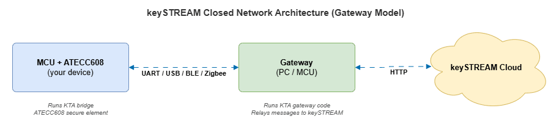

Use this guide when your MCU has no direct internet.
If your MCU has direct internet access, use keySTREAM Wi-Fi / Ethernet Integration Guide.

In closed-network mode, the MCU does not connect to the internet directly.
Before you start, make sure you have:
| Item | Why it is needed |
|---|---|
| keySTREAM portal account + an active Fleet Profile | Provides the KEYSTREAM_DEVICE_PUBLIC_PROFILE_UID the device provisions against. See Fleet Profile Creation Guide. |
App_Config.h for your project (customer-provided) | Holds KEYSTREAM_DEVICE_PUBLIC_PROFILE_UID. It is not shipped inside the package — you create it (see the template in the Fleet Profile note in section 2) and place it at your project root. |
| Toolchain for your target | ESP32 → ESP-IDF v4.4+ with ESP_IDF_PATH set; Nordic / bare-metal ARM → arm-none-eabi-gcc; Linux host test → GCC + pthreads. |
| A platform SAL implementation for your transport | The package ships SAL stubs/contracts; you implement the *_sal.c for any platform not already filled in (see the per-transport tables below). |
Note on the package folder name. Throughout this guide the integration package directory is referred to as
Kta-Unified/. In the delivered SDK it is the **Kta_Unified/** folder; the two names refer to the same package. It contains exactly two top-level folders:gateway/andmcu/.
This is the folder you integrate:
Kta-Unified/gateway/ ├── application/ <- choose ONE main file by your Gateway OS │ ├── main_windows_async_kta.c <- use for Windows gateway │ ├── main_linux_async_kta.c <- use for Linux gateway │ ├── main_baremetal_async_kta.c <- use for bare-metal gateway │ └── main_freertos_async_kta.c <- use for FreeRTOS gateway │ ├── backends/ <- choose ONE transport to communicate between MCU and gateway: uart/usb/ble/zigbee │ ├── backend_interface.c (Do not edit this file) │ ├── backend_interface.h (Do not edit this file) │ ├── backend_message.c (Do not edit this file) │ ├── backend_message.h (Do not edit this file) │ ├── uart/ │ │ ├── backend_uart.c (Do not edit this file) │ │ ├── uart_sal.h (Do not edit - SAL contract) │ │ └── sal/ │ │ ├── esp32/ │ │ │ ├── uart_config.h <- configure UART parameters (baud, port) - edit this │ │ │ └── uart_sal.c (implement your platform UART SAL here) │ │ ├── linux/ │ │ │ ├── uart_config.h <- already implemented; verify settings │ │ │ └── uart_sal.c <- already implemented (POSIX termios) │ │ ├── sg41/ │ │ │ ├── uart_config.h <- configure SERCOM port and baud - edit this │ │ │ └── uart_sal.c (implement your platform UART SAL here) │ │ └── windows/ │ │ ├── uart_config.h <- already implemented; verify COM port settings │ │ └── uart_sal.c <- already implemented (Win32 API) │ ├── usb/ │ │ ├── backend_usb.c (Do not edit this file) │ │ ├── usb_sal.h (Do not edit - SAL contract) │ │ └── sal/ │ │ ├── esp32/ │ │ │ ├── usb_config.h <- configure USB VID/PID and endpoints - edit this │ │ │ └── usb_sal.c (implement your platform USB SAL here) │ │ ├── linux/ │ │ │ ├── usb_config.h <- configure VID/PID - edit this │ │ │ └── usb_sal.c (implement your platform USB SAL here) │ │ ├── sg41/ │ │ │ ├── usb_config.h <- configure USB CDC Device Stack - edit this │ │ │ └── usb_sal.c (implement your platform USB SAL here) │ │ └── windows/ │ │ ├── usb_config.h <- configure WinUSB settings - edit this │ │ └── usb_sal.c (implement your platform USB SAL here) │ ├── ble/ │ │ ├── backend_ble.c (Do not edit this file) │ │ ├── ble_sal.h (Do not edit - SAL contract) │ │ └── sal/ │ │ ├── esp32/ │ │ │ ├── ble_config.h <- configure MTU, scan params, device name - edit this │ │ │ └── ble_sal.c (implement your platform BLE SAL here) │ │ ├── linux/ │ │ │ ├── ble_config.h <- configure BlueZ adapter and scan params - edit this │ │ │ └── ble_sal.c (implement your platform BLE SAL here) │ │ ├── nordic/ │ │ │ ├── ble_config.h <- configure Nordic BLE params - edit this │ │ │ └── ble_sal.c (implement your platform BLE SAL here) │ │ └── windows/ │ │ ├── ble_config.h <- configure WinRT BLE scan and MTU - edit this │ │ └── ble_sal.c (implement your platform BLE SAL here) │ └── zigbee/ │ ├── backend_zigbee.c (Do not edit this file) │ ├── zigbee_sal.h (Do not edit - SAL contract) │ └── sal/ │ ├── esp32/ │ │ ├── zigbee_config.h <- configure Zigbee channel, PAN ID - edit this │ │ └── zigbee_sal.c (implement your platform Zigbee SAL here) │ ├── linux/ │ │ ├── zigbee_config.h <- configure coordinator serial port - edit this │ │ └── zigbee_sal.c (implement your platform Zigbee SAL here) │ └── windows/ │ ├── zigbee_config.h <- configure coordinator COM port - edit this │ └── zigbee_sal.c (implement your platform Zigbee SAL here) │ ├── ktaIntegration/ (Do not edit core files) │ ├── ktaFieldMgntHook.c (Do not edit this file) │ ├── ktaFieldMgntHook.h (Do not edit this file) │ ├── README.md │ └── platform/ <- choose ONE folder matching Gateway OS │ ├── include/ (Do not edit) │ ├── windows/ <- use with kta_async_kta.c (Do not edit files inside) │ ├── linux/ <- use with kta_async_kta.c (Do not edit files inside) │ └── freertos/ <- use with kta_async_kta.c(Do not edit files inside) │ └── keyStreamIntegration/ <- cloud/HTTP stack; choose OS adapter folder ├── COMMON/ │ └── logmodule/ │ ├── include/ (Do not edit) │ └── KTALog.c (Do not edit this file) └── COMMSTACK/ └── http/ ├── include/ (Do not edit) ├── comm_if.c (Do not edit this file) ├── http.c (Do not edit this file) ├── baremetal/ │ ├── k_sal_com.c (implement your platform network SAL here) │ └── k_sal_os.c (implement your platform OS/timer SAL here) ├── freertos/ <- include for FreeRTOS gateway build (Do not edit files inside) ├── linux/ │ ├── k_sal_com.c <- include for Linux gateway build (Do not edit files inside) │ └── k_sal_os.c (Do not edit) ├── microchip/ <- include for Microchip gateway build (Do not edit files inside) └── windows/ ├── k_sal_com.c <- include for Windows gateway build (Do not edit files inside) └── k_sal_os.c (Do not edit)
Kta-Unified/mcu/ ├── mcu_config.h <- edit this first: set MCU_OS, MCU_BACKEND, MCU_PLATFORM ├── Makefile <- build: make OS=<os> BACKEND=<transport> PLATFORM=<platform> ├── BUILD.md │ ├── backends/ <- choose ONE transport: uart/usb/ble/zigbee │ ├── backend_interface.c (Do not edit this file) │ ├── backend_interface.h (Do not edit this file) │ ├── uart/ │ │ ├── backend_uart.c (Do not edit this file) │ │ ├── uart_sal.h (Do not edit - SAL contract) │ │ └── sal/ │ │ ├── esp32/ │ │ │ ├── uart_config.h <- configure baud/pin settings - edit this │ │ │ └── uart_sal.c (implement your ESP32 UART SAL here) │ │ └── sg41/ │ │ ├── uart_config.h <- configure SERCOM port and baud - edit this │ │ └── uart_sal.c (implement your SG41 UART SAL here) │ ├── usb/ │ │ ├── backend_usb.c (Do not edit this file) │ │ ├── usb_sal.h (Do not edit - SAL contract) │ │ └── sal/ │ │ ├── esp32/ │ │ │ ├── usb_config.h <- configure TinyUSB CDC params - edit this │ │ │ └── usb_sal.c (implement your ESP32 USB SAL here) │ │ └── sg41/ │ │ ├── usb_config.h <- configure USB Device Stack - edit this │ │ └── usb_sal.c (implement your SG41 USB SAL here) │ ├── ble/ │ │ ├── backend_ble.c (Do not edit this file) │ │ ├── ble_sal.h (Do not edit - SAL contract) │ │ └── sal/ │ │ ├── esp32/ │ │ │ ├── ble_config.h <- configure MTU, advertising, NUS UUIDs - edit this │ │ │ └── ble_sal.c (implement your ESP32 BLE SAL here) │ │ └── nordic/ │ │ ├── ble_config.h <- configure Nordic BLE (NUS, MTU, GAP) - edit this │ │ └── ble_sal.c (implement your Nordic BLE SAL here) │ └── zigbee/ │ ├── backend_zigbee.c (Do not edit this file) │ ├── zigbee_sal.h (Do not edit - SAL contract) │ └── sal/ │ └── esp32/ │ ├── zigbee_config.h <- configure Zigbee channel, PAN ID - edit this │ └── zigbee_sal.c (implement your ESP32 Zigbee SAL here) │ ├── bridgeKta/ (Do not edit this folder) │ ├── bridge_kta.c (Do not edit this file) │ └── bridge_kta.h (Do not edit this file) │ └── examples/ ├── README.md ├── common/ │ ├── bridge_integration.c (Do not edit this file) │ └── bridge_integration.h (Do not edit this file) └── platform/ <- choose ONE OS entry path ├── kta_mcu_integration.h (Do not edit) ├── bare_metal/ <- use when MCU_OS=bare_metal │ ├── main_bare_metal.c (Do not edit) │ └── kta_mcu_integration_baremetal.c (Do not edit) ├── freertos/ <- use when MCU_OS=freertos │ ├── main_freertos.c (Do not edit) │ └── kta_mcu_integration_freertos.c (Do not edit) ├── linux/ <- use when MCU_OS=linux (host testing) │ ├── main_linux.c (Do not edit) │ └── kta_mcu_integration_linux.c (Do not edit) └── windows/ <- use when MCU_OS=windows (host testing) ├── main_windows.c (Do not edit) └── kta_mcu_integration_windows.c (Do not edit)
Fleet Profile configuration note (required before build):
The package does not ship an App_Config.h. Create one at your project root and set the Fleet Profile UID in it.
| What to set | File | Symbol |
|---|---|---|
| Fleet Profile UID from keySTREAM portal | App_Config.h (you create it) | KEYSTREAM_DEVICE_PUBLIC_PROFILE_UID |
Minimal App_Config.h template:
App_Config.h must be reachable on the include path of the KTA library (ktaConfig.h references KEYSTREAM_DEVICE_PUBLIC_PROFILE_UID). Do not add #include "ktaConfig.h" inside App_Config.h — ktaConfig.h already pulls in App_Config.h, and the reverse include creates a circular dependency.
For step-by-step Fleet Profile creation (with field table), see: Fleet Profile Creation Guide
From gateway/application/, choose one file matching your Gateway OS. Do not include the others in your build.
| Gateway OS | File to use |
|---|---|
| Windows | main_windows_async_kta.c |
| Linux | main_linux_async_kta.c |
| FreeRTOS | main_freertos_async_kta.c |
| Bare-metal | main_baremetal_async_kta.c |
From gateway/backends/, include one transport folder in your build.
| Transport | Folder |
|---|---|
| UART | backends/uart/ |
| USB | backends/usb/ |
| BLE | backends/ble/ |
| Zigbee | backends/zigbee/ |
Do not edit backend_interface.c or backend_message.c.
Inside your chosen transport folder open sal/ and choose the subfolder for your Gateway platform. Open the .c file and implement all functions marked TODO.
windows/ble_sal.c
| Function | What to implement |
|---|---|
ble_sal_connect | Windows BLE connection — use BluetoothLEDevice::FromBluetoothAddressAsync() (WinRT / C++/WinRT) |
ble_sal_write | GATT write — use GattCharacteristic::WriteValueAsync() |
ble_sal_read | GATT read with timeout using Windows BLE APIs |
ble_sal_scan | BLE device scanning using Windows BLE APIs |
Edit gateway/backends/ble/sal/<platform>/ble_config.h to set MTU size, scan interval/window, connection timeout, and device name before implementing.
For UART, USB, and Zigbee, follow the exact same steps as the BLE example:
gateway/backends/<transport>/sal/<platform>/<transport>_config.h to set transport parameters (port, baud, VID/PID, channel, etc.).TODO functions in <transport>_sal.c — the required function signatures are in <transport>_sal.h.The same pattern applies to the MCU side: mcu/backends/<transport>/sal/<platform>/.
Refer to the folder trees in section 2 for the full list of platforms available per transport.
gateway/ktaIntegration/platform/ contains OS-specific async implementation. Choose the folder that matches your Gateway OS and include it in the build. Do not modify any file inside it.
| Gateway OS | Folder to include |
|---|---|
| Windows | platform/windows/ |
| Linux | platform/linux/ |
| FreeRTOS | platform/freertos/ |
ktaFieldMgntHook.c and ktaFieldMgntHook.h — do not modify these files.
gateway/keyStreamIntegration/ is the HTTPS/cloud communication stack. For Windows/Linux/FreeRTOS/Microchip, include the matching folder without editing. For baremetal, implement the TODO sections in k_sal_com.c and k_sal_os.c.
| Folder | What it contains | Action |
|---|---|---|
COMMON/logmodule/KTALog.c | Logging module | Include in build; do not edit |
COMMSTACK/http/comm_if.c | HTTP interface layer | Include in build; do not edit |
COMMSTACK/http/http.c | HTTP core | Include in build; do not edit |
COMMSTACK/http/windows/k_sal_com.c | Windows HTTP transport | Include if Gateway OS = Windows; do not edit |
COMMSTACK/http/windows/k_sal_os.c | Windows OS abstraction | Include if Gateway OS = Windows; do not edit |
COMMSTACK/http/linux/k_sal_com.c | Linux HTTP transport | Include if Gateway OS = Linux; do not edit |
COMMSTACK/http/linux/k_sal_os.c | Linux OS abstraction | Include if Gateway OS = Linux; do not edit |
COMMSTACK/http/freertos/ | FreeRTOS HTTP transport | Include if Gateway OS = FreeRTOS; do not edit |
COMMSTACK/http/baremetal/k_sal_com.c | Bare-metal HTTP transport | Include if Gateway OS = bare-metal; implement TODOs |
COMMSTACK/http/baremetal/k_sal_os.c | Bare-metal OS/time abstraction | Include if Gateway OS = bare-metal; implement TODOs |
COMMSTACK/http/microchip/ | Microchip platform HTTP | Include if Gateway is Microchip; do not edit |
Include the header and call these two functions from your main_*.c:
Status values returned in status:
| Status | Meaning |
|---|---|
E_K_KTA_KS_STATUS_NOT_PROVISIONED | Not provisioned yet |
E_K_KTA_KS_STATUS_PROVISIONED | Fully provisioned |
E_K_KTA_KS_STATUS_SUSPENDED | Suspended |
E_K_KTA_KS_STATUS_REFURBISH | Requires refurbish flow |
Configuration flows top-down. The customer owns the top four layers; the transport-agnostic core is never edited.
Open **mcu/mcu_config.h** — this is the only file you need to edit before compiling. Change the three defines to match your hardware:
| Define | Your options | What it selects |
|---|---|---|
MCU_OS | freertos | bare_metal | linux | RTOS/scheduler used by the entry layer. Compilation of examples/platform/<os>/ is selected by the Makefile OS= variable; keep both in sync. |
MCU_BACKEND | uart | ble | usb | zigbee | Transport the bridge requests at init. The backends/<transport>/ tree compiled in is selected by the Makefile BACKEND= variable; keep both in sync. |
MCU_PLATFORM | esp32 | nordic | sg41 | SAL implementation. The compiled SAL folder is selected by the Makefile PLATFORM= variable; keep both in sync. |
Valid combinations:
| MCU + OS + Transport | MCU_OS | MCU_BACKEND | MCU_PLATFORM |
|---|---|---|---|
| ESP32 + FreeRTOS + UART | freertos | uart | esp32 |
| ESP32 + FreeRTOS + BLE | freertos | ble | esp32 |
| ESP32 + FreeRTOS + USB | freertos | usb | esp32 |
| ESP32 + FreeRTOS + Zigbee | freertos | zigbee | esp32 |
| SG41 + bare-metal + UART | bare_metal | uart | sg41 |
| SG41 + bare-metal + USB | bare_metal | usb | sg41 |
| Nordic + bare-metal + BLE | bare_metal | ble | nordic |
| Linux host test + UART | linux | uart | esp32 |
The package ships ready-to-edit SAL folders only for the combinations below. Any other MCU_BACKEND / MCU_PLATFORM pair requires you to add the matching backends/<transport>/sal/<platform>/ folder (config header + *_sal.c) before it will build or link.
| Transport | Platforms with a shipped MCU SAL folder |
|---|---|
uart | esp32, sg41 |
ble | esp32, nordic |
usb | esp32, sg41 |
zigbee | esp32 |
Host-test caveat: there is no
uart/sal/linuxSAL on the MCU side, so a puremake OS=linux …build cannot link against a real driver out of the box — it is intended for compiling the OS-independent layers. Provide your own host SAL if you need a runnable Linux MCU binary.
Note: All three defines are wrapped in
#ifndef, so you can also override them without editing the file, using a compiler flag:-DMCU_OS=freertos -DMCU_BACKEND=uart -DMCU_PLATFORM=esp32
Open the *_config.h for your chosen backend + platform and set the hardware parameters (pins, baud rate, port number, etc.):
| MCU_BACKEND | MCU_PLATFORM | Config file to edit |
|---|---|---|
uart | esp32 | backends/uart/sal/esp32/uart_config.h |
uart | sg41 | backends/uart/sal/sg41/uart_config.h |
ble | esp32 | backends/ble/sal/esp32/ble_config.h |
ble | nordic | backends/ble/sal/nordic/ble_config.h |
usb | esp32 | backends/usb/sal/esp32/usb_config.h |
usb | sg41 | backends/usb/sal/sg41/usb_config.h |
zigbee | esp32 | backends/zigbee/sal/esp32/zigbee_config.h |
The most important settings to verify before building:
UART:
BLE (ESP32):
USB (ESP32):
Must match: The transport config on the MCU side must match the corresponding
*_config.hon the Gateway side (same baud, same MTU, same PAN ID, etc.). Mismatched settings are the most common source of E2E failures.
Open backends/<MCU_BACKEND>/sal/<MCU_PLATFORM>/<backend>_sal.c and implement all functions marked with /* TODO */. The required function signatures are declared in backends/<backend>/<backend>_sal.h — do not change those signatures.
Note: For UART, USB, and Zigbee the MCU SAL function signatures and pattern are the same as the Gateway side (section 3.3). For BLE the MCU acts as a peripheral/server (it advertises and waits for the Gateway to connect), which is the opposite of the Gateway role.
BLE MCU (nordic/ble_sal.c) — MCU acts as BLE peripheral (server):
| Function | What to implement |
|---|---|
ble_sal_init | Initialize SoftDevice; configure GAP; set device name; initialize Nordic UART Service (NUS) |
ble_sal_deinit | Deinitialize SoftDevice |
ble_sal_advertise_start | Start BLE advertising |
ble_sal_advertise_stop | Stop BLE advertising |
ble_sal_write | Write NUS notification to connected central (Gateway) |
ble_sal_read | Read data received from central (Gateway) |
BLE MCU (esp32/ble_sal.c) — MCU acts as BLE peripheral (server):
| Function | What to implement |
|---|---|
ble_sal_init | Initialize NimBLE or BlueDroid; set up GATT NUS server; configure advertising |
ble_sal_write | Send NUS notification to connected Gateway |
ble_sal_read | Read data from NUS RX characteristic |
After mcu_config.h is set and the SAL is implemented, build using the Makefile. Pass the same OS/BACKEND/PLATFORM values you set in mcu_config.h:
Build output is placed in build/<OS>_<BACKEND>_<PLATFORM>/kta_bridge_<OS>_<BACKEND>_<PLATFORM>.
Required external paths: the bridge calls into the KTA library, so
bridgeKta/bridge_kta.cincludesk_kta.h. That header ships with the KTA library (kta_lib/SOURCE/include), not with this package — pass its location to the build withKTA_LIB_INC=.... For ESP32/FreeRTOS builds also exportESP_IDF_PATH. Example:make OS=freertos BACKEND=uart PLATFORM=esp32 \KTA_LIB_INC=/path/to/kta_lib/SOURCE/include
Tip:
mcu_config.hrecords your intended target; the Makefile (OS/BACKEND/PLATFORM) selects which source files are compiled. Pass the same values to both. (Roadmap: a future release wiresMCU_BACKENDdirectly into transport selection so onlymcu_config.his needed.)
The MCU bridge exposes a single entry-point API. Call it from your main() or application startup:
Note (current behavior):
kta_mcu_integration_entry()selects the transport frommcu_config.h(MCU_BACKEND) and is fully wired for UART today. Forlinux/windowshost-test builds, or for BLE/USB/Zigbee, use the lower-levelbridge_integration_*API below and enable the transport in the build (see the status table). The supported transport macro isBACKEND_TYPE_*/ theMCU_BACKENDvalue — earlier entry files referenced aTRANSPORT_TYPE_*macro, which is being removed.
If you need finer control (e.g. to run the bridge alongside your own application loop), use the lower-level API directly:
BackendType values:
| Constant | Transport | Status in common dispatcher |
|---|---|---|
BACKEND_TYPE_UART | UART / Serial | Selectable today |
BACKEND_TYPE_USB | USB CDC/Bulk | SAL contract present; enable in the build (-DKTA_ENABLE_USB) and implement the SAL |
BACKEND_TYPE_BLE | Bluetooth Low Energy | SAL contract present; enable in the build (-DKTA_ENABLE_BLE) and implement the SAL |
BACKEND_TYPE_ZIGBEE | Zigbee | SAL contract present; enable in the build (-DKTA_ENABLE_ZIGBEE) and implement the SAL |
Before running an end-to-end test, verify each item:
| # | Check | Where |
|---|---|---|
| 1 | KEYSTREAM_DEVICE_PUBLIC_PROFILE_UID is set | App_Config.h (project root) |
| 2 | MCU_OS, MCU_BACKEND, MCU_PLATFORM match your hardware | mcu/mcu_config.h |
| 3 | MCU transport config (baud / pins / MTU) matches Gateway transport config | backends/<transport>/sal/<platform>/*_config.h on both sides |
| 4 | Only one backend is compiled on each side (MCU and Gateway) | Makefile / IDE project settings |
| 5 | Gateway entry main_<os>_async_kta.c matches the Gateway OS | gateway/application/ |
| 6 | Gateway ktaIntegration platform folder matches the Gateway OS | gateway/ktaIntegration/platform/<os>/ |
| 7 | ktaKeyStreamInit() is called before ktaKeyStreamFieldMgmt() on Gateway | gateway/application/main_*.c |
| 8 | MCU bridge_integration_init() is called before bridge_integration_process() | Your MCU application |
| 9 | Fleet Profile UID exists and is active in the keySTREAM portal | keySTREAM portal |
A new platform integration touches only these items — no framework .c edits:
App_Config.h.MCU_OS / MCU_BACKEND / MCU_PLATFORM in mcu_config.h (and pass matching make variables).<transport>_sal.c for your platform (signatures from <transport>_sal.h; do not change them).<transport>_config.h parameters; ensure they match the Gateway side.-DKTA_ENABLE_<TRANSPORT>).kta_mcu_integration_entry() (or the lower-level bridge_integration_* API).backend_interface.*, bridge_*, or ktaFieldMgntHook.*.| # | What to include | Where |
|---|---|---|
| 1 | Application entry (choose one) | gateway/application/main_<os>_async_kta.c |
| 2 | Transport backend | gateway/backends/<transport>/backend_<transport>.c |
| 3 | Transport common (do not edit) | gateway/backends/backend_interface.c, backend_message.c |
| 4 | Platform SAL (choose one) | gateway/backends/<transport>/sal/<platform>/<transport>_sal.c |
| 5 | KTA platform (choose one, do not edit) | gateway/ktaIntegration/platform/<os>/ |
| 6 | Cloud HTTP stack (choose one) | gateway/keyStreamIntegration/COMMSTACK/http/<os>/ |
| 7 | KTA hook (do not edit) | gateway/ktaIntegration/ktaFieldMgntHook.c |
OS selection quick-reference:
| Gateway OS | Entry (#1) | KTA platform (#5) | HTTP folder (#6) |
|---|---|---|---|
| Windows | main_windows_async_kta.c | platform/windows/ | http/windows/ |
| Linux | main_linux_async_kta.c | platform/linux/ | http/linux/ |
| FreeRTOS | main_freertos_async_kta.c | platform/freertos/ | http/freertos/ |
| Bare-metal | main_baremetal_async_kta.c | (bare-metal adapter) | http/baremetal/ |
| Check | Expected log / result |
|---|---|
bridge_integration_init() | returns 0 (success) |
ktaKeyStreamInit() | returns E_K_STATUS_OK |
ktaKeyStreamFieldMgmt() | returns E_K_STATUS_OK |
| Lifecycle status | eventually E_K_KTA_KS_STATUS_PROVISIONED |
| Symptom | Likely cause | Fix |
|---|---|---|
BACKEND_TIMEOUT | transport link broken | verify wiring / BLE pairing / Zigbee join on both sides |
| Transport cannot open | wrong COM port / VID-PID / BLE address / baud | fix *_config.h on both MCU and Gateway |
Build error: undefined MCU_OS | mcu_config.h not included | add #include "mcu_config.h" or pass -DMCU_OS=… to compiler |
| Build error: header not found | wrong include path | verify -I flags in Makefile match the selected backend + platform |
Status never reaches PROVISIONED | onboarding or network issue | verify gateway internet; check KEYSTREAM_DEVICE_PUBLIC_PROFILE_UID is correct |
| MCU BLE not found by Gateway | device name mismatch | ensure BLE_GATEWAY_NAME in MCU ble_config.h matches what the Gateway scans for |
Build error: App_Config.h: No such file | App_Config.h not created / not on include path | create it at your project root (template in section 2) and add its folder to your -I paths |
Build error: KEYSTREAM_DEVICE_PUBLIC_PROFILE_UID undefined | App_Config.h not reachable from ktaConfig.h | ensure App_Config.h is on the include path before ktaConfig.h is compiled |
Compiler error: circular include between ktaConfig.h and App_Config.h | App_Config.h includes ktaConfig.h | remove #include "ktaConfig.h" from App_Config.h (ktaConfig.h already includes it) |
Link error: undefined kta_mcu_integration_entry | OS integration file not compiled | ensure examples/platform/<os>/kta_mcu_integration_<suffix>.c is in the build (the Makefile adds it automatically) |
Link error: undefined *_sal_* / no driver symbols | platform SAL not implemented/compiled | implement backends/<transport>/sal/<platform>/<transport>_sal.c and ensure it is compiled |
mcu_config.h integrations that hardcoded the transport in the entry file: delete any local #define BRIDGE_TRANSPORT_TYPE ..., set MCU_BACKEND in mcu_config.h, and rebuild. (Note: TRANSPORT_TYPE_* macros are being replaced by BACKEND_TYPE_* / MCU_BACKEND.)mcu/ tree (e.g. SG41_UART_X): keep working unchanged; no action required.g_ble_backend: continue to build as-is; migrating them to the common dispatcher is optional.